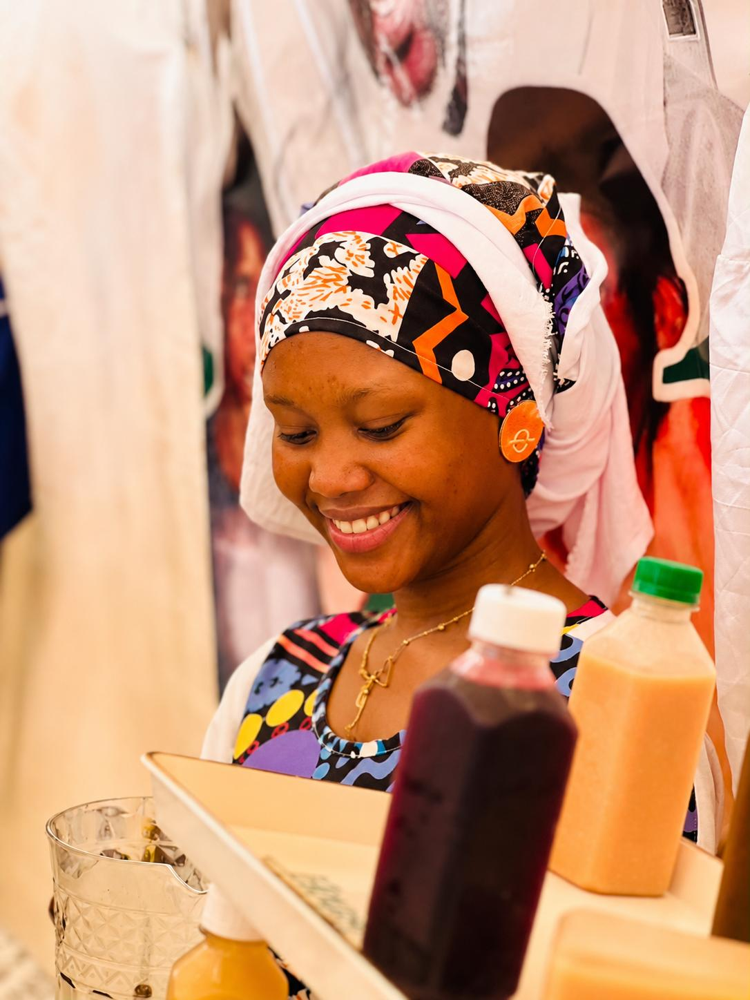
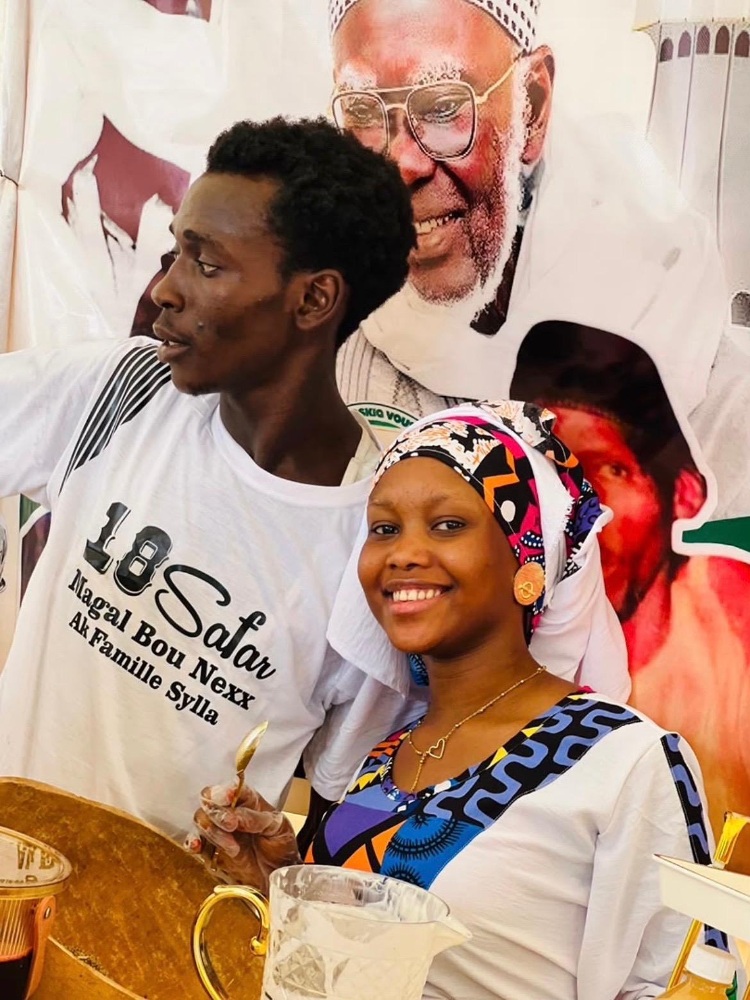
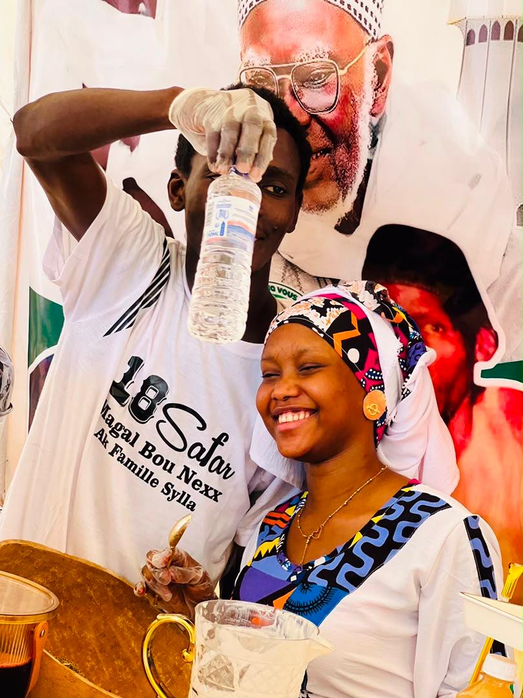
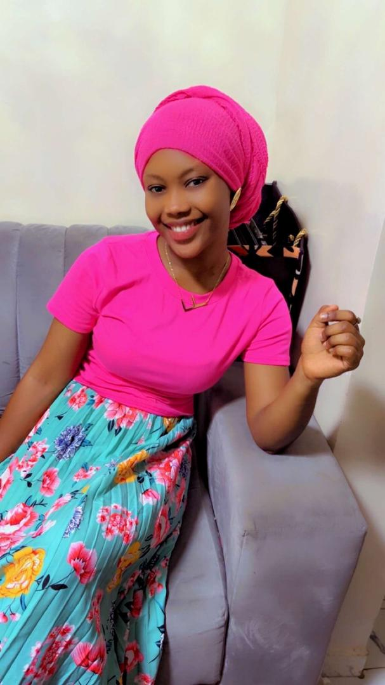
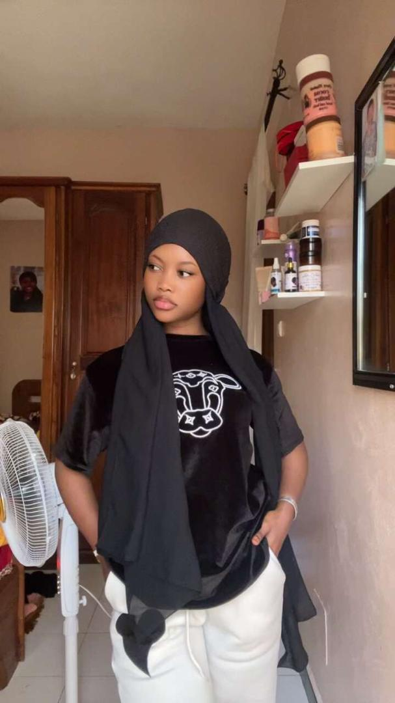
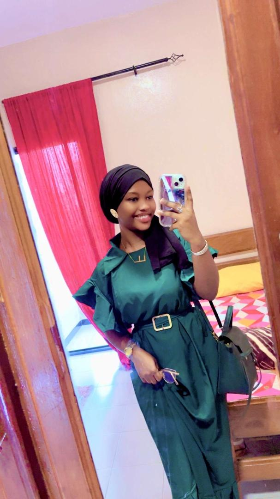
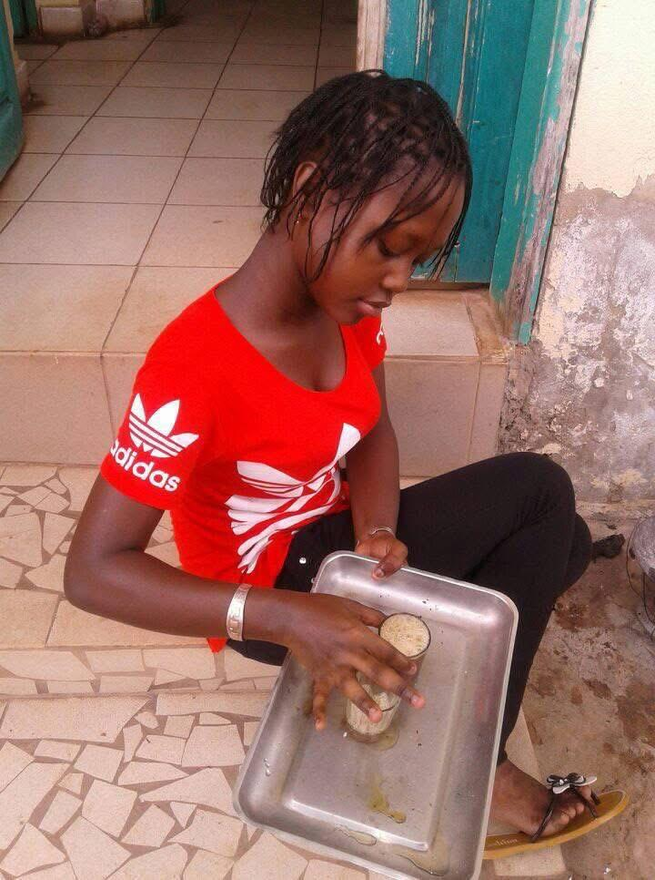

Souvenir 01 ❤️
Un moment que je n'oublie pas.
UNE SURPRISE POUR
Ma beauté · Ma princesse · Mon cadeau d'Allah ❤️
À LA PERSONNE QUI A PRIS UNE PLACE UNIQUE
Fatou Kaba Fall
Une histoire née d'un simple message… et devenue un monde de souvenirs.
NOTRE HISTOIRE
Parfois, les plus belles histoires commencent sans prévenir. Pas avec un grand événement, pas avec une rencontre spectaculaire… mais avec quelques mots envoyés presque machinalement.
En 2023, dans un groupe WhatsApp créé pour les nouveaux étudiants d'ATOS, j'ai simplement demandé qui habitait à Guédiawaye, comme moi. Et puis tu as répondu.
À cet instant, je ne pouvais absolument pas savoir que cette réponse toute simple allait me conduire vers la rencontre de l'une des personnes les plus merveilleuses que j'aie connues. Je ne savais pas que derrière ce message se trouvait une personne qui allait laisser une empreinte aussi profonde dans mes pensées, dans mes souvenirs et dans mon cœur.
Au fil du temps, nous avons partagé tellement de choses. Des discussions, des rires, des moments simples, des souvenirs parfois difficiles à expliquer. Des instants qui, sur le moment, semblaient ordinaires… mais qui, avec le recul, sont devenus précieux.
Il y a eu de très beaux moments, mais aussi des doutes, des questions, des incompréhensions et de petites disputes. Peut-être parce que ce que nous sommes l'un pour l'autre n'a jamais vraiment trouvé de mot parfaitement adapté.
Trop d'amour pour être simplement des amis.
Trop compliqué pour être simplement un couple.
Et beaucoup trop de souvenirs pour devenir des inconnus.
Et malgré tout ce qui a pu être compliqué, il y a une chose qui n'a jamais changé : mon amour pour toi. Un amour qui ne dépend pas d'un statut, d'un titre ou d'une définition. Un amour qui existe simplement parce que tu es toi.
Si parfois tu penses que tu es juste mon amie, alors laisse-moi te dire que tu te trompes. Dans mon cœur, tu représentes bien plus. Je ne sais pas exactement de quelle manière la vie écrira la suite de notre histoire, mais je sais une chose : lorsque je pense à mon avenir, ton existence y a une place.
Et quelle que soit la forme que prendra notre relation demain, je garderai toujours une attention particulière pour toi. Je veillerai toujours, même de loin, à ce que tu ailles bien, parce que ton bonheur compte pour moi.
Tu es devenue l'un de ces êtres que l'on ne rencontre pas par hasard. Une personne que l'on remercie silencieusement pour les souvenirs qu'elle a offerts, pour les émotions qu'elle a fait naître et pour la place qu'elle a réussi à prendre sans même le demander.
Alors aujourd'hui, pour ton anniversaire, je ne veux pas seulement te souhaiter une belle journée. Je veux te souhaiter une vie remplie de paix, de réussite, de sourires sincères et de tout ce que ton cœur mérite.
Joyeux anniversaire ma princesse, mon cadeau d'Allah, ma beauté. ❤️
07 SOUVENIRS







03 SOUVENIRS EN VIDÉO
Un moment que je n'oublie pas.
Un autre morceau de notre histoire.
Un instant simple et précieux pour moi.
✨ Un dîner, une soirée, et surtout un beau souvenir à garder. ❤️
F · K · F
Un prénom et un nom… mais pour moi, beaucoup plus qu'une suite de lettres. Chaque lettre cache une raison de te trouver unique.
Parce qu’il y a chez toi quelque chose de rare. Une façon d’être, de sourire et d’exister qui ne ressemble à personne d’autre.
Parce que sans même t’en rendre compte, tu as pris une place immense dans mon cœur. Un amour que les mots ont parfois du mal à expliquer.
Parce que certains souvenirs avec toi ont cette douceur particulière que le temps ne réussit pas à effacer.
Parce que tu es simplement toi. Et c’est justement cette authenticité qui te rend si particulière à mes yeux.
Parce qu’on peut rencontrer beaucoup de personnes dans une vie… mais certaines ne ressemblent à aucune autre. Toi, tu es de celles-là.
Parce que derrière ton caractère, tes silences et tes petits défauts se cache une personne dont la présence peut réellement faire du bien.
Pour ta façon d’avancer, pour la personne que tu es devenue et pour celle que tu deviendras encore.
Pas seulement pour ton visage ou ton sourire. Belle dans ta manière d’être, dans tes gestes, dans tes imperfections et dans tout ce qui fait que tu es toi.
Parce que lorsque je pense à demain, je ne peux pas faire comme si tu n’avais jamais existé dans mon histoire.
Parce que même après tout ce temps, il y a encore quelque chose chez toi qui me surprend, qui m’attire et qui me donne envie de te découvrir encore.
Parce que certaines personnes passent dans notre vie… et d’autres y laissent une empreinte. Toi, tu as laissé la tienne.
Parce qu’il suffit parfois d’un sourire, d’un message ou simplement de savoir que tu vas bien pour rendre une journée différente.
Parce que peu importe le nom que l’on donnera à notre histoire, peu importe les chemins que la vie choisira pour nous… je garderai toujours une place particulière pour toi dans mon cœur.
13 lettres. Une seule personne. Une place immense dans mon cœur.
Un visage que je n’oublie pas. Un sourire que je reconnaîtrais entre mille. Des souvenirs que je garderai précieusement. Une personne qui a changé quelque chose dans mon histoire.
Et peut-être que c’est ça, finalement, le plus beau cadeau : avoir rencontré quelqu’un qu’on n’avait pas prévu de rencontrer… et découvrir qu’elle allait devenir impossible à oublier. ❤️
SI JE DEVAIS TE DÉCRIRE
Parce que tu occupes une place particulière dans mon cœur et que tu mérites le meilleur.
Parce qu'au-delà de la beauté extérieure, il y a cette personne qui a marqué mes souvenirs.
Parce qu'il n'existe qu'une seule Fatou Kaba Fall, et que notre histoire n'appartient qu'à nous.
Parce que certaines personnes deviennent impossibles à remplacer dans une vie.
POUR TOI, AUJOURD'HUI
Que tes rêves deviennent réalité, que tes projets réussissent, que ton cœur connaisse la paix et que la vie te donne mille raisons de sourire.
Mon cadeau d'Allah, ma princesse, ma beauté…